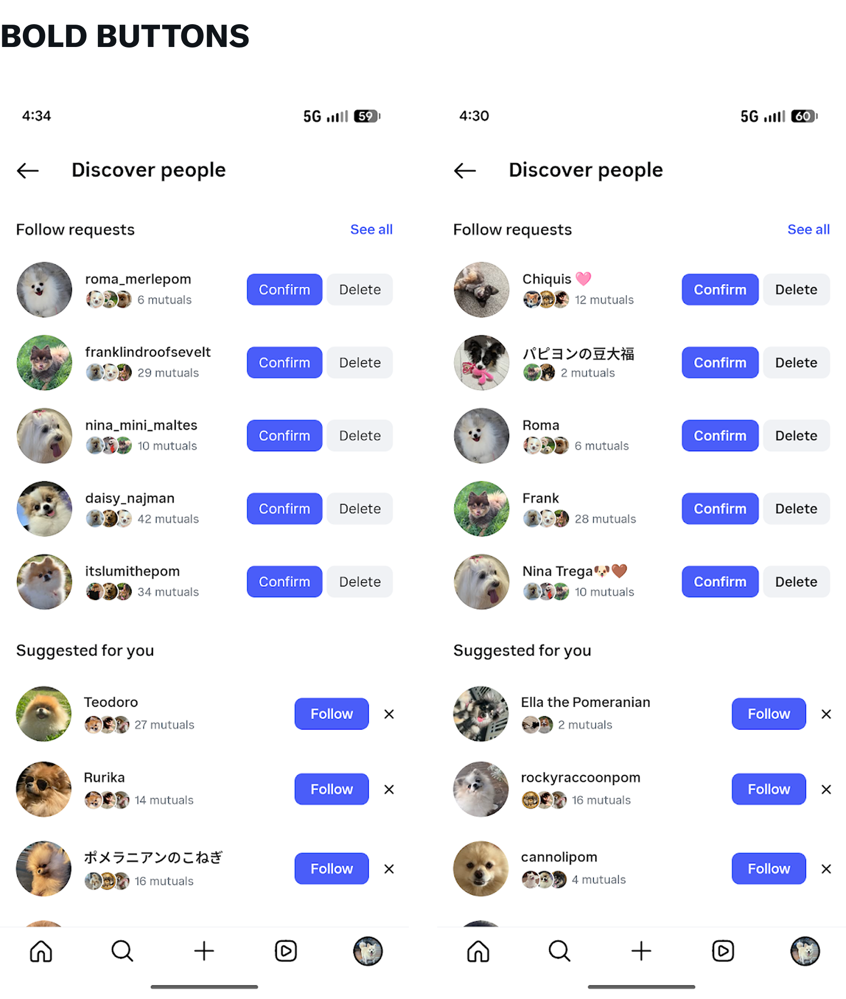
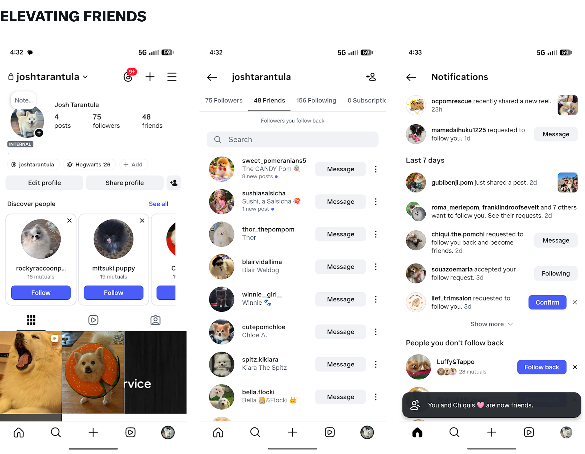
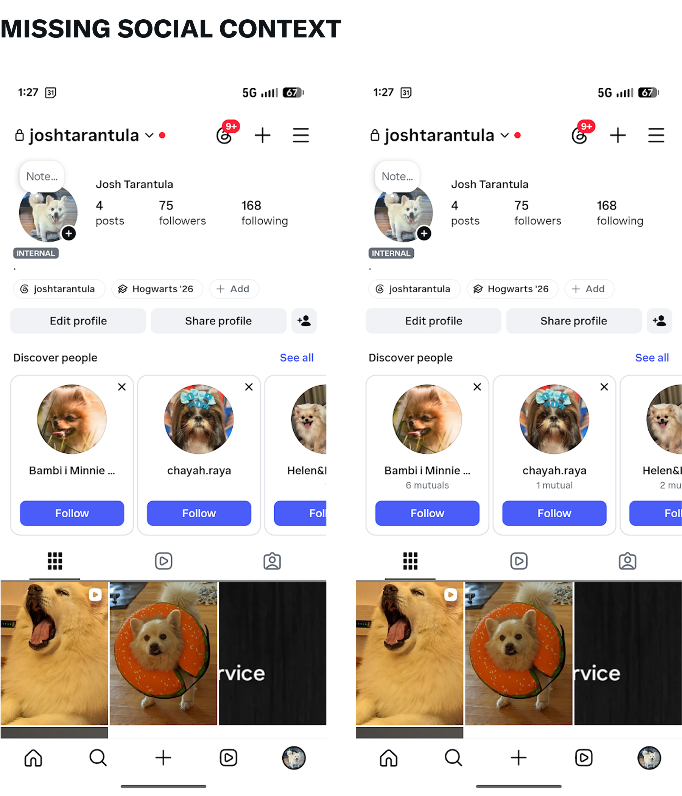
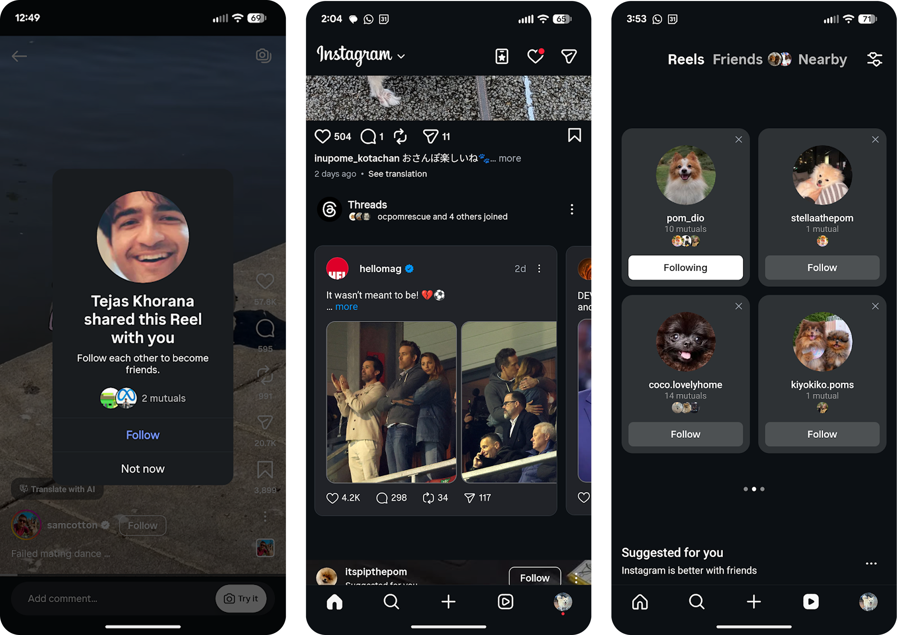

Instagram samples
Background
As a Content Design Lead at Instagram, I was responsible for overseeing design work in the Friending and NUX teams. I’ll upload more detailed case studies soon (aka once the NDAs allow it), but in the mean time you can see a selection of screens from a few projects below.
Elevating friends
A top priority in Instagram for the next few years is to elevate the concept of 'friends' within Instagram. Specifically, the focus is on upleveling the idea that friends are followers you follow back.
As the design lead for this project, I chose to prioritze two areas to start our tests: a new tab focused only on friends, and custom notifications surrounding friending moments.
Android improvements
With support from AI-powered tools, I single-handedly designed, coded, tested, and launched multiple features for Instagram focused on improving the Android experience. You can see a few examples of those changes below.
In all of the below examples, the original version is seen on the left.

For my tests, I removed dividers that broke Design System convention and reduced spacing where possible between categories.


Additional screens
In addition to the above, here are some other screens I worked on focused on building connections between users in both Instagram and Threads.
